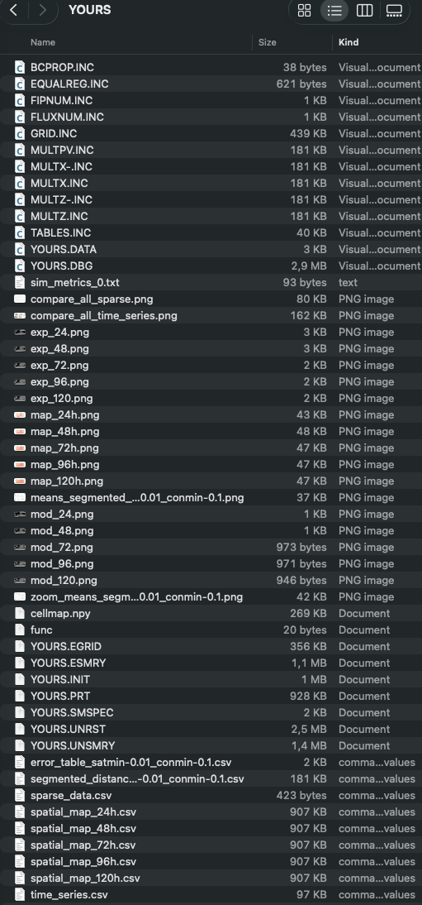
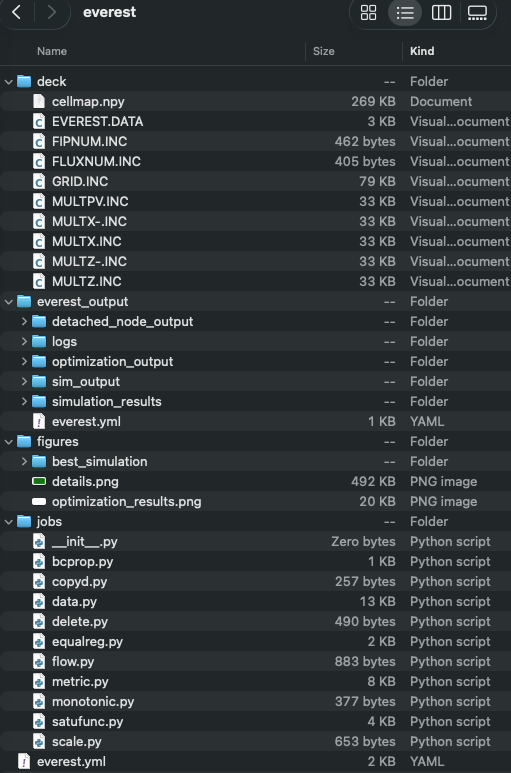
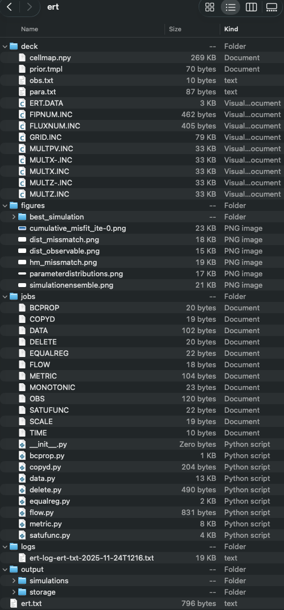

Output folder
Single run
The following screenshot shows the generated files in the output folder after executing pofff in the Adding your results subsection in the examples.

Everest
The following screenshot shows the generated files in the output folder after executing pofff in the everest.toml:
pofff -i everest.toml -o everest -m everest

The best_simulation folder contains the closest simulation to the observations, and generates the tables and pngs figures as in the single run folder.
ERT
The following screenshot shows the generated files in the output folder after executing pofff in the ert.toml:
pofff -i ert.toml -o ert -m ert

The best_simulation folder contains the closest simulation to the observations, and generates the tables and pngs figures as in the single run folder.